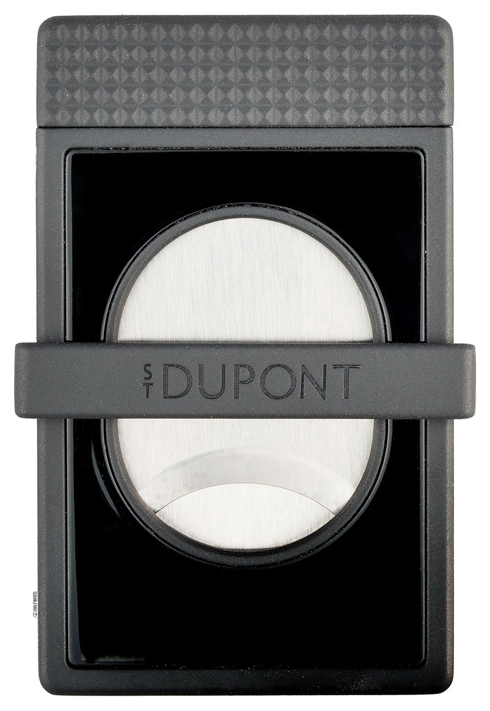

Halfwheel編集部が明かす「今年も使い続けた道具」— ソフトフレームへの転向と、600ドルになった灰皿
葉巻メディアHalfwheelの編集部3人が、昨年始めた年次企画の2年目として、実際に使い続けている道具をそれぞれ紹介しました。切り口は「使い続けているものこそ本物」です。ブルックス・ウィッティントン氏は、S.T. Dupont のスリム・シガーカッター（愛用のXIKAR XOに取って代わる勢い）、Palió Veneto（4フレーム・ライター、大きなリングゲージ用に今年から常用。シガー立て付き）、Boveda 50カウント・ヒュミドール（320gパック1個で約1年湿度維持）、チェコの手吹きガラス製Czevitrum Salamander 灰皿（昨年から唯一続投）を挙げています。Halfwheelによると、チャーリー・ミナート氏は、Fox 749 カッター（今年レビューした葉巻はすべてこれでカット）、IM Corona 69 Double Corona（ソフトフレームへの転向が今年唯一の大きな変化。S.T. Dupont Ligne 2の日本版に相当する2本ソフトフレームで、約15年前に購入し現役）、Blazer PB207（タッチアップ・再点火用）、Sonic キャビネット・ヒュミディファイア（5,000本超の大型キャビネット3台で使用）、OH!VAL 灰皿（2023年購入時は222ドル＝約35,300円が、現在は600ドル＝約95,400円に値上がり。「600ドルならもっと安いものを買う」と本人もコメント）を挙げています。Halfwheelによると、パトリック・ラグレイド氏は、S.T. Dupont テーブル・ライター（2種の炎、大きなタンク）、XIKAR MTX シガー・シザー（過去1年で唯一購入した道具。ライターのガス抜き・炎調整・栓抜き機能付き）、Stinky オリジナル灰皿（15〜20年愛用）、保管はプラスティック・ビン＋Boveda（クーラードア2台＋伝統的ヒュミドール数台）を挙げています。3本の記事はいずれも11月27日の公開で、写真は各記事の製品そのものの実物写真です。
記事全文を読む ›